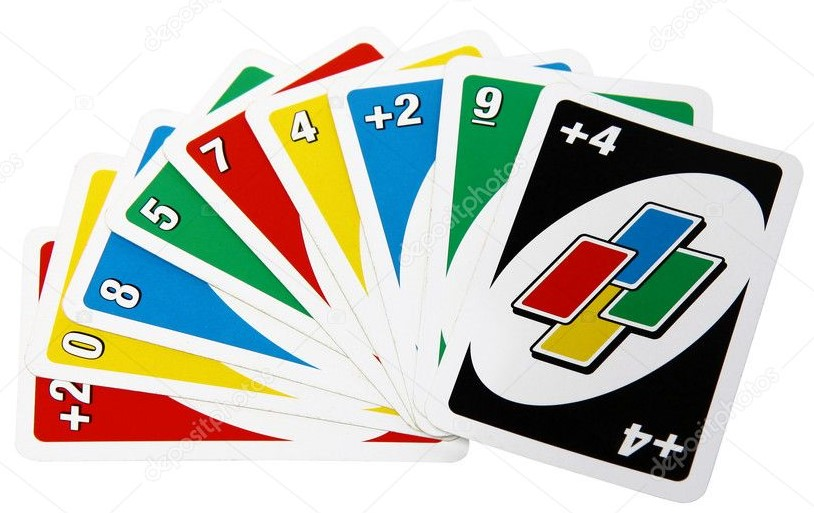

Use these rules to break records nto top position:
Objective

UNO is the classic card game that’s easy to pick up and impossible to put down! Players take turns matching a card in their hand with the current card shown on top of the deck either by color or number. Special action cards deliver game-changing moments as they help you defeat your opponents. These include Skips, Reverses, Draw Twos, Wild and Draw Four Wild cards.
There are 108 cards in the deck.Each digit is represented in 4 colours.
All digits (except 0) are in double quantity.
Active or Power Cards
Active UNO cards: "Skip", "Take two", "Reverse".
Black active UNO cards: "Wild", "Wild and take four". By 4 cards of each kind.
Active Cards & their powers
"Skip" - the next player misses his turn. The player can "save" from the action of this card only by laying out exactly the same card (the same colour, the same picture), that is, by performing the Intervention.
"Take two" - the next player takes two cards from the deck. The actions of the cards "Take Two" are not summed up,when the player puts another draw two card.
"Reverse card" - the direction of the turn is reversed. For example, it was "clockwise", after laying out the uno reverse card it will be "counter-clockwise". When laying out several cards "Reverse" their actions are summarized. For example, two cards "Reverse" have no effect - the turn continues in the same direction as before, three cards "Reverse" change the direction of the turn to the opposite, etc.
"Wild" - allows you to change the player's current colour (for any, including the current colour). The next player must put any card of the specified colour. In order to lay out the card "Wild" the player does not need any special conditions.
"Wild Draw 4"-allows the player to choose a color and the player 2 has to draw 4 cards from the deck.
Getting to the Goal
The player whose all cards are dropped is the winner.
When the player is left with one card in hand the player should shout UNO.
Hence, matching all the color cards and using active cards effectively makes the player a winner.